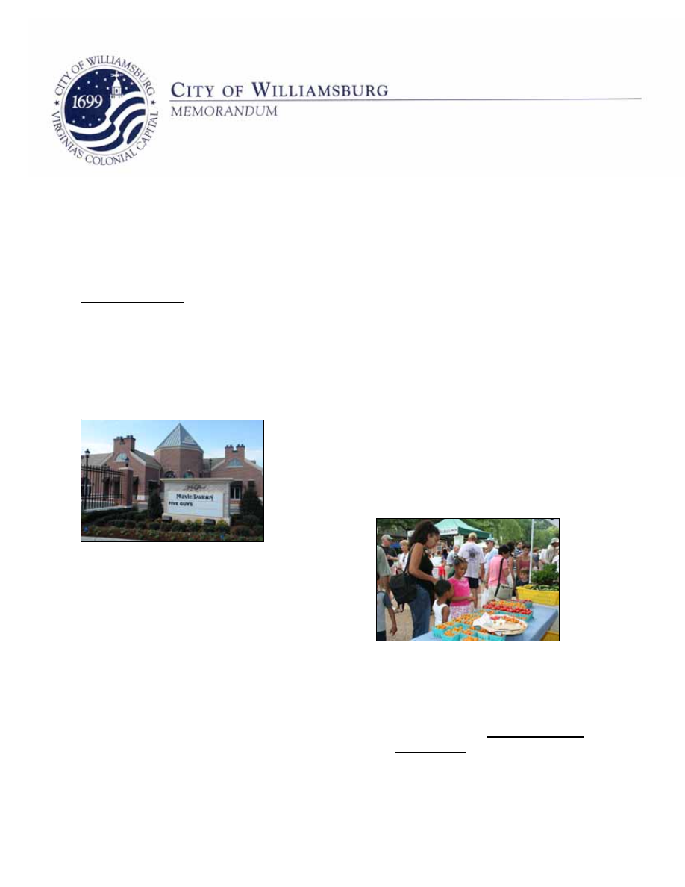
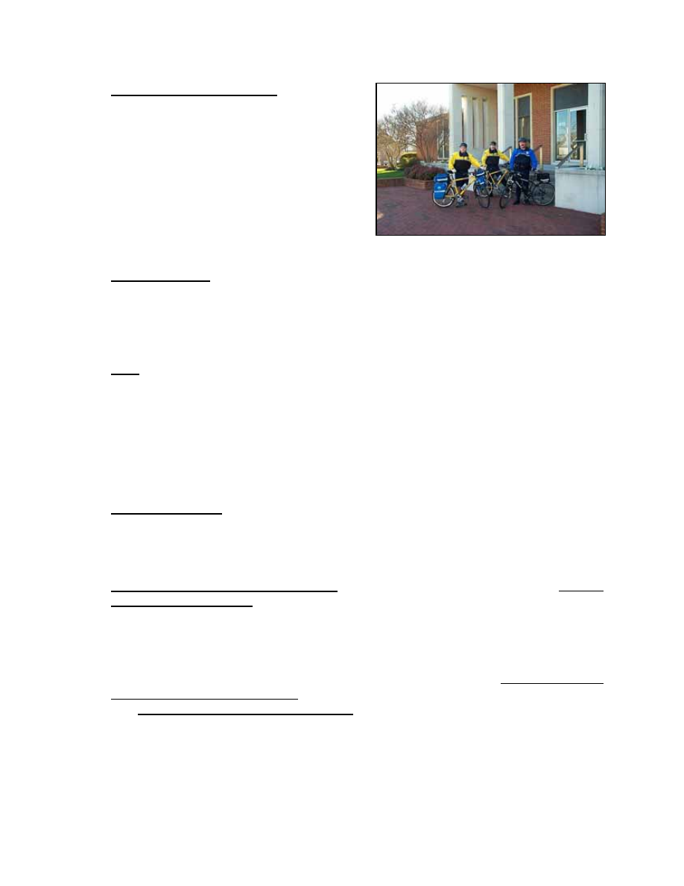
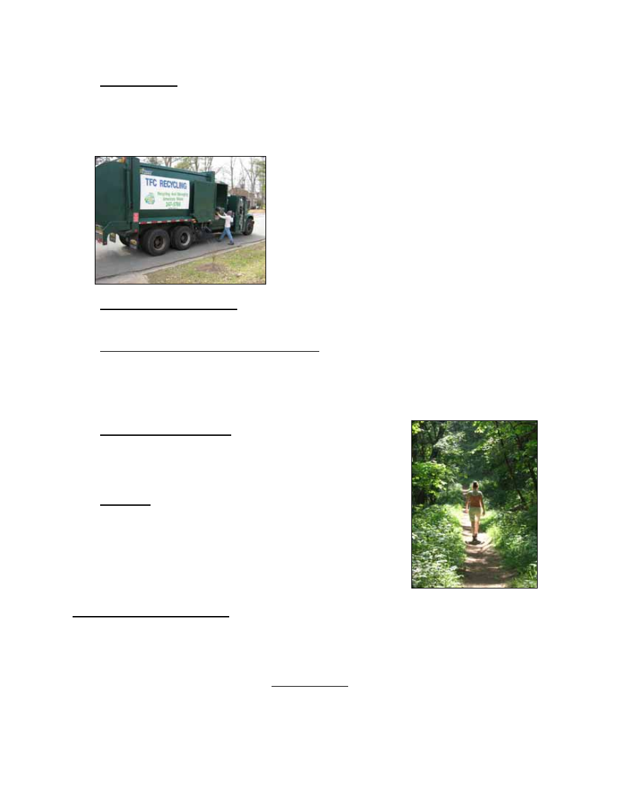

TO:
Mayor and City Council
DATE:
March 13, 2009
SUBJECT: City Manager's Budget Message
INTRODUCTION
Green money. Green earth. The color green happens to symbolize the two pillars holding
up the Sustainable City: economic and environmental.
Both “greens” are essential to Williamsburg’s long term success:
A strong and resilient local economy and local
government finances.
A healthy and beautiful natural and built
environment.
This year both greens drive the budget as Williamsburg faces economic challenges not
seen in over half a century – with the budget shrinking more than five percent; and as
Williamsburg pursues a heightened awareness of environmental stewardship.
In fact, some budget issues align around both green dimensions: In refuse collection we
can save dollars and reduce carbon emissions. In water policy we can achieve water
A - 1
security by “the least environmentally damaging practicable alternative.”
1
In promoting
the greenest of industries – tourism – we can increase the share of room tax dedicated to
tourism promotion even with reduced room tax receipts. In expanding the Municipal
Building we can collocate city services while saving energy and operating costs.
The city ended last fiscal year FY 08 with its best performance ever – revenues exceeding
expenditures by $3.3 million, $29.0 million in reserve, and only $11.1 million in total
outstanding debt. Working from that strong financial position, and working from City
Council’s new Biennial Goals, Initiatives and Outcomes strategic plan for the next two
years (see second Tab), the city is ready to take on the formidable challenge of the future.
Looking now at the overall picture for the year ahead, the Proposed General Fund
Operating Budget can be summarized by:
Projected Revenues of $32,125,513, down by 5.5%.
Planned Spending of $32,174,767, down by 5.6%.
No Change in Tax Rates.
Number of full time equivalent positions reduced from 202 to 187.
No pay increases.
In the Utility Budget, recommended is a 5% Water and Sewer rate increase, from $3.80
to $4.00 per one thousand gallons, beginning July 2009, per the Five Year Water and
Sewer Rate Analysis. The rate increase is expected as part of the cost of participation in
the long term water supply agreement with Newport News.
In the General Fund Capital Improvement Program, a total of $9,701,044 is projected in
capital spending, not including debt service. This is a reduction of $1.9 million from the
projection for FY 10 in last year’s CIP. The largest project in FY 10 is the Municipal
Building renovation, expansion and energy retrofit. The project is being designed and will
be ready to bid in summer 2009.
The combined total of the four funds – General Operating Fund, Utility Fund, Sales
Tax/Capital Fund, and, now shown as a separate fund, the Public Assistance Fund –
amounts to $52,049,556.
The proposed revenue estimates and spending plan, if executed exactly as projected in the
proposed FY 2010 budget, would result in a General Fund balance on June 30, 2010 of
$15,453,552.
1 U.S. Army Corps of Engineers, Division Commander Brigadier General Stephen Rhoades, 2002.
A - 2
To breakdown these numbers by operating city department, see the third tab on
Performance Metrics which arrays year by year budget inputs (dollars and personnel) with
output and outcome performance measures and targets.
With the above as an overview, the remainder of the Budget Message discusses a number
of issues that are particularly helpful in understanding and reviewing the proposed budget,
beginning with General Fund revenue projections.
REVENUE PROJECTIONS
Next year (FY 2010) we forecast General Fund revenues of $32,125,513, a 5.5% decrease
from the current year (FY 2009) budget amount. Behind the Budget Guide tab is
a detailed explanation of revenues, explaining the legal basis and ten year trends of all
revenue sources. The following is a summary of significant revenue changes in next year’s
budget:
1. Property
Taxes. Property tax projections are based on a total anticipated value of
real estate of $1.898 billion dollars, an increase from current land book values of
2.5%. Assuming no change in the tax rate of $.54 per hundred dollars of assessed
value, we estimate real property tax collections of $10,100,000 next year. The chart
below details the change anticipated in real estate values:
$ in Millions
FY 2009
Actual
Values
FY 2010
Estimated
Reassessment
Change due to
Reassessment
FY 2010
Estimated New
Construction
FY 2010
Totals
Residential
1,189.6
1,185.2
-0.4%
2.5
1,210.6
Commercial
661.7
666.7
0.8%
2.1
687.6
Totals
1,851.4
1,852.0
0%
4.6
1,898.2
Williamsburg’s real estate values continue to hold close to level unlike most of the
nation, but assessments are always a lagging indicator of market conditions.
Other property taxes include personal property (car tax) and business property.
Taken together these categories are near level. The amount of car tax relief paid by
the state is expected to be 58% next year.
All property taxes (real and tangible) taken together are expected to generate
$12,949,320, a 2.1% increase, making property taxes a relative bright spot in the
city’s revenue outlook.
A - 3
2.
Other Local Taxes. Other local sources of taxation include various consumer utility
taxes and franchise fees, business licenses, transient lodging and prepared food or
"room and meal" taxes. Taken together, other local taxes will generate
$13,658,600, a disappointing 11% decrease.
The estimate for room and meal tax collections is projected to total $3,500,000 for
room tax, a 15.7% decrease; and $5,500,000 for meal tax, a 6.8% decrease, over
last year’s adopted budget. These estimates reflect declining sales coming off a
strong FY 07 and FY 08 in the city’s tourism economy. The room tax estimate does
not include the $2.00 destination marketing surcharge for additional tourism
promotion, which is a separate line item in the budget of $1.5 million.
Taken together, all local sources of taxation are expected to generate $26,607,920,
a 5.1% decrease from the current year budget.
3.
User Fees. User fees include license and permit fees, including building permits,
and various charges for service. Licenses and Permits are projected to decline
22.5% to $182,280 due to the lack of construction activity.
4.
Fines and Forfeitures. This category covers court fines – mostly for traffic
violations, parking fines, and code violation fines. It is expected to decline 4.9% to
$232,000.
5.
Revenue From Use of Money and Property. The interest earning estimates, down
a huge 38.5%, ($400,000 in the General Fund and $50,000 in the Utility Fund) are
based on assumed earnings of 1.5% on daily accounts and on longer-term
accounts. The property rental estimate is $483,900, a 13.7% decrease, covering
the Community Building, Transportation Center, City Square, and the Prince George
Parking Garage.
6.
Miscellaneous. The largest revenue line in this category is the Emergency Medical
Transport fees enacted four years ago. They are projected to return $325,000 – all
of which is earmarked for EMS service.
7.
Revenue From the Commonwealth. Revenue from the state government in the
amount of $2,713,200, which includes support for constitutional officers and both
categorical and non-categorical aid, are estimated to decrease by 3.6%. The
estimate of Sales Tax for Education of $680,000, based on State Department of
Education calculations, is 10.8% less.
A - 4

EXPENDITURE ISSUES
Next year we have proposed General Fund operating expenditures of $ 32,174,767, a
decrease of 5.6% from the current year adopted budget. Broken down in four large
categories:
FY 2009
Adopted
Budget
FY 2010
Proposed
Budget
Percent
Increase/
(Decrease)
City Departments
$ 18,716,709
$17,381,026
(7.1%)
Constitutional Officers and
Judicial
$ 2,040,531
$ 2,004,623
(1.8%)
Education and Library
$ 7,926,345
$7,924,345
0%
Outside Agencies and Health
$ 5,128,213
$4,864,773
(5.1%)
As will be evident in the following pages, five items will produce most of the savings in FY
2010: personnel reductions, reduced street repaving, refuse collection alternative,
information technology cutbacks, and reduced tourism promotion.
1.
Salary Ranges and Pay. Due to declining revenue, no money is recommended for
pay raises next year. Moreover, despite a 4.2% increase in the Consumer Price
Index for calendar 2008, no general increase in city pay ranges are recommended
either.
2.
Personnel Positions. As explained in greater detail under departmental headings,
the total number of full time equivalent positions in city departments deceases from
202 to 187. The reduction is being accomplished through transfer and
reorganization, including the 13 positions transferred to York County as part of the
E911 consolidation. Additionally, a number of positions remain funded in the
budget, but are frozen indefinitely. Thus, counting the true permanent reduction due
to E911 consolidation as 4 instead of 13, the total number of positions to be
eliminated totals 6. Adding to that the number to be frozen is 6, for a total of 12.
A - 5

3.
Health Coverage. The city's health plan is largely self-insured. Anthem is paid a
set amount to administer the plan, but the city keeps savings when actual costs fall
below the "premium,” and pays more when costs exceed the premium. That liability,
however, is capped at 125% of premiums through excess insurance. Savings to
date have created a reserve, currently $595,356, to fund losses should losses
exceed the amount budgeted in any given year. Therefore, we budget for the
expected loss only. Based on experience so far this year, we have included a 5%
increase in funds budgeted for health insurance and the dental reimbursement
program over the current year budget in the total amount of $1,265,000.
4.
Virginia Retirement System. VRS sets the contribution rate for the city based on
biennial actuarial studies. Our rate beginning July 1, 2009 is proposed to be
15.49%. Based on our projected payroll next year, we expect to pay $1,462,596 to
fund employee VRS retirements, nearly the same as the current budget.
5.
Administration. Six office budgets now make up the central administration group:
City Council, Clerk of Council/City Manager, Economic Development, City Attorney
and Human Resources. The total of these budgets is $1,389,796, a 1.9% decrease.
In a change from prior years, Human Resources has been broken out as a separate
budget, and the Communications Specialist and Clerk of Council have been united
in a single budget supporting City Council and City Manager.
6.
Non-Department. This budget in the amount of $475,000 includes several
important expenditure items not assigned to an office or department, including “aid
to the Commonwealth” ($60,000) and contingency funds both general ($300,000)
and for economic development ($50,000).
7.
Joint Courthouse and Judicial Functions. The Joint Courthouse Agreement,
dated December 1996, between the city and James City County, governs cost
sharing not only for taking care of the new courthouse, but for judicial functions
related to the Courthouse, including: Circuit Court, General District Court, Juvenile
and Domestic Relations Court, Clerk of the Circuit Court, Commonwealth Attorney,
and City/County Sheriff. The Courthouse Agreement provides that the city and
county will determine population based on the annually updated Hampton Roads
Data Book published by the Hampton Roads Planning District Commission. The
estimate of city cost is $400,000, same as prior year.
A - 6

8.
Police and E911 Service. The Police
Department proposed budget is $4,097,082,
down from the current year by 4.4%. The
cost savings come from the recent decision
to consolidate E911 Emergency
Communications with York County.
Additionally, one police position has been
frozen, and another will be frozen upon an
upcoming retirement. We hope to fill these
positions with “COPS” funding in the federal
stimulus package.
9.
Parking Garage. Based on experience in the first four years of operation, we have
set the Prince George Parking Garage operating budget at $122,924. This expense is
covered by $200,000 in projected parking garage revenues. Revenues in excess of
operating costs will help pay debt service on the structure. (The balance owed on the
Parking Garage as of January 2009 was $5,319,464.)
10. Fire. The Fire Department proposed budget is $3,244,147, down from the current
year by 2.9%. Over the past three years, five new firefighter/EMT positions have
been added. These firefighters have helped the fire department maintain adequate on
duty staffing given the constant pressure of time away for leave and training. The five
positions were also a “downpayment” in staffing which will be required to open a future
satellite fire station (nine positions total) on Ironbound Road adjacent to High Street.
Given current and prospective constraints, the additional positions are not affordable
and the Ironbound project needs to remain on hold.
11. Code Compliance. Due to planned personnel reassignment and reductions in light of
the level of building activity, this budget has been reduced 26.5% to $394,117. The
five person professional staff will be reduced to four recognizing the decrease in
workload due to economic conditions.
12. Regional Jail and Youth Detention. Funding for the city’s share of the Virginia
Peninsula Regional Jail is expected to be $1,078,305, near level with the current
budget. The city share of jail costs is based on the average usage rate over the past
five years. Each member jurisdiction (Williamsburg, James City, York and Poquoson)
pays for their share of the inmate population based on the location where the offense
occurred and the arresting authority. We expect to pay 19% of local jail costs this
coming year. Other detention related expenditures include: the Middle Peninsula
Juvenile Detention Commission at $80,000, which is projected to decrease by 33%;
and Colonial Group Home Commission (Crossroads Home) at $82,642, which is
proposed to increase by 8.4%. Both are based on amount of usage by city children.
A - 7

13. Public Works. Public Works divisional budgets totaling $3,619,151 (Engineering,
Streets, Refuse Collection, Landscape, Cemetery, Mosquito Control, Facilities
Maintenance) is 13.3% below the current year amount. A Streets position will remain
frozen. The budget reduction is due primarily to two major recommendations: The first
is a $300,000 reduction in street resurfacing. Should transportation related stimulus
money be forthcoming, we can reinstate this cut.
The second is a $200,000 reduction in the refuse
collection account in anticipation of a change in
service methodology for the next five year collection
contract. The new contract is scheduled to be
effective July 2009.
14. Information Technology. A 28% reduction to $340,000 will be possible by scaling
back on the personal computer replacement cycle and on maintenance contracts.
15. Public Assistance (Human Services). The contracted position of At–Risk
Counselor has been taken out of this budget, and anticipated Comprehensive Service
Act funding has been reduced, to achieve a 6.5% budget reduction. It may be
possible to use stimulus funds to hire summer workers to keep our Youth
Achievement Program at full strength.
16. Parks and Recreation. The Parks and Recreation
budgets total $1,291,083, a 9.5% reduction, which we hope
to achieve primarily through planned personnel
realignment.
17. Planning. A reduction of 10.4% in this department is
made possible primarily by the personnel transfer
associated with Clerk of Council reorganization, and a
reduction in outside professional services.
OUTSIDE AGENCY ISSUES
Nearly one-half of the city's General Fund budget goes to agencies and activities not under
City Council's direct operational control. Funding relationships are often complex, and vary
in degrees of funding discretion possible from year to year. The "Notes on Funding
Relationship," contained under the Budget Guide tab, help explain the city's role in
providing financial support to these agencies and activities.
A - 8

Background documentation from outside agencies is provided in the Appendix of the
Proposed Budget, or provided under separate cover, as in the case of the School and the
Library budgets.
A number of issues concerning outside agency funding requests for the coming year need
to be highlighted:
1.
Health Services. The four agencies named below provide health services to city
residents, workers and visitors. The total recommended funding for FY 10 is
$460,777, a decrease of 6.7% over the current year.
The Peninsula Health District budget request to the city is $112,138, a 17.4%
decrease from the current year.
The Human Services Advisory Board has recommended Olde Towne Medical
Center (Williamsburg Area Medical Assistance Corporation or WAMAC) receive
funding of $83,430, a 10% decrease from the current year; and that the
Comprehensive Health Investment Program (CHIP) receive level funding of
$19,349.
Finally, the Colonial Services Board, the agency through which the city provides
mental health and retardation services to its residents, requests level funding in city
contribution of $245,860, based on the multi-jurisdictional funding formula.
2.
Schools. Based on the School Board's budget at this point in time, and State
funding based on General Assembly action, and flow through of federal stimulus
dollars, we can expect a city contribution to the operational budget in the amount of
$7,024,315, level with the current year. The final amount will be determined by
formula as set forth in the current five-year city/county Joint School Agreement,
effective since July 1, 2007, and the final amount of State and Federal stimulus
support.
As a result of current and past school agreements, the city's proportional share of
funding for the schools over the past decade has declined, even when funding in
absolute dollars increases, and that trend will continue next year. City children
numbering 780 now account for 7.45% of the children enrolled in the system. Under
the Joint School Agreement, in FY 10 the city pays a share equal to its enrollment
times a factor of 1.15. So, the city continues to pay a premium to participate in the
joint system. Based on the current enrollment split, the city’s contribution is
projected at 8.57% and the county’s 91.43%, of local funding for the schools.
A - 9

3.
Library. The Williamsburg Regional Library is funded under the revised library
agreement with James City County, effective July 1, 2006. That agreement calls for
funding of operational costs based on the
proportion of circulation by residency. Based on
the library’s figures, the city/county circulation
ratio for fiscal year 2008 was 15.28% city, and
84.72% county. The Library’s proposed budget
of $6,365,337 is a slight decrease, which would
result in a small decrease in city contribution.
The agreement, however, provides that neither
the city or county will reduce funding, so the
city’s contribution will remain level at $884,955.
4.
Human Service Agencies. The city's Human Services Advisory Board, as
requested by City Council, has evaluated Human Services Agency requests for
funding, and made its recommendations to City Council. Their analysis and
recommendations are in the Appendix to the Proposed Budget. The proposal is a
12.6% decrease from the current year in the total amount of $101,328. The
proposed budget follows the Human Services Board’s recommendations in all
respects.
5.
Community and Economic Development Agencies. The city has supported
tourism advertising and promotion through Colonial Williamsburg and the Greater
Williamsburg Chamber and Tourism Alliance.
This year Colonial Williamsburg Foundation has requested $1,410,000, level with
existing funding. The Greater Williamsburg Chamber and Tourism Alliance has
also requested level funding of $940,000 (which includes $100,000 for Chamber
operations). Due to sharp declines in room and meal tax dollars and the inability to
make up all the difference from other sources, I recommend that the city decrease
its total support for CWF and the Alliance by 6.4%. I further recommend that the city
maintain its traditional 60/40 split between CWF and the Alliance resulting in
$1,320,000 for CWF, and $880,000 for the Alliance. The city’s goal should be to do
all it reasonably can to promote visitation to Williamsburg in the most effective way
we know.
The proposed budget also includes an estimated $1,500,000 of pass through
funding from the $2.00 room surcharge to the Williamsburg Area Destination
Marketing Committee’s campaign. This brings the total city tax dollars for tourism
promotion to $3,700,000.
Five years ago in FY 04 the city received $3.99 million in room tax receipts, and
funded CWF/Alliance $2.16 million (54% of room tax used for CWF/Alliance
contribution). Next year we project room taxes to generate $3.50 million, and
CWF/Alliance funding of $2.20 million (63% of room tax used for the CWF/Alliance
A - 10
contribution). The point is that the city has significantly expanded its contribution to
tourism promotion as a percent of room taxes.
In addition to tourism promotion, the city support is recommended for a number of
other agencies that make important economic development and community
development contributions to Williamsburg:
Williamsburg Redevelopment & Housing Authority
$35,000
Hampton Roads Planning District Commission
$10,884
Peninsula Council for Workforce Development
$ 5,947
Hampton Roads Economic Development Alliance
$11,812
Thomas
Nelson
Community
College:
Hampton
Campus
$
6,200
Williamsburg
Campus/Discovery Ctr Lease rental
$ 2,700
Hampton Workforce Development Center
$10,500
Colonial Soil and Water District
$ 2,655
Hampton
Roads
Partnership
$
5,050
Hampton
Roads
Film
Office $
5,000
Williamsburg
Land
Conservancy
$
9,500
Heritage
Humane
Society
$15,200
Williamsburg Farmers’ Market
$ 3,800
Historic
Triangle
Collaborative
$
7,000
Military and Federal Facilities Alliance
$ 6,645
Total including CWF, GWCTA, and WADMC
$3,837,893
No funding is recommended for Jamestown/Yorktown Foundation or APVA-Historic
Jamestowne which requested $10,000 and $15,000, respectively. Neither is funding
recommended next year for the Crossroads Partnership.
6.
Cultural. The Williamsburg Arts Commission has again performed the task of
receiving, evaluating, and recommending funding for the arts. Their report is copied
in the Appendix to the Proposed Budget. They recommend local arts funding of
$130,780, a decrease of 9.3%. Of this amount, the city contribution would be
$63,390. This assumes a state arts commission challenge grant of $10,000, and
county funding of $63,390.
City sponsorship for the sixth annual “Festival Williamsburg” is provided again in the
amount of $50,000, and an allowance of $10,000 to partially fund the Virginia
Symphony Lake Matoaka Concert at the beginning of fall term.
A - 11

7.
Transportation. The Williamsburg Area
Transit Authority, which operates
Williamsburg Area Transport, has requested
level funding based on the Cooperative
Agreement between the partners. Our
estimate of the FY 10 cost to the city will not
exceed $265,000, level with the current year.
Under Transportation are two continuing regional
partnerships to promote alternatives to highway
travel. Continued support for Virginian’s for High
Speed Rail in the amount of $4,750 is
recommended, and $4,245 to provide funds for
the Williamsburg EDA to participate in business
development underwriting for Newport
News/Williamsburg International Airport .
CAPITAL IMPROVEMENT PROGRAM
Revenue to fund the CIP comes from 1% Sales Tax Receipts, grants, and funds reserved
for capital improvements. This year there is a possibility of some federal stimulus funds,
but not a certainty. CIP items are explicitly linked to City Council’s Goals, Initiatives and
Outcomes for the Biennium.”
Due to a estimated decline in Sales Tax Receipts of 19.5%, the CIP has been trimmed
down mainly by deferring projects.
Here are some of the highlights from this year's update of the Five Year Capital
Improvement Program:
A - 12

Ironbound Road Widening planning money, mostly VDOT Urban Funds, is budgeted
for FY 10, but project construction will not likely occur in the five year window.
Underground
Wiring will accompany the reconstructed portions of Ironbound Road
near Richmond Road. The next major city financed, stand alone underground
project is on Page Street is now slated for FY 11. Funds are budgeted in FY 10 for
the Underground Wiring Assessment Program should the Berkeley Lane project
proceed.
Traffic Signal improvements are planned in FY 10 (deferred from FY 09) for
Richmond Road/Waltz Farm Drive, with Second Street/Parkway Drive in FY 11, and
York Street/Quarterpath Road projected in FY 12 – all most covered by VDOT
Urban Funds and developer contributions.
Corridor
Enhancements are planned as part of the Regional Corridor Program for
York Street (Route 60); and upgrading of guardrails will continue in out years.
Sidewalk
Upgrades with VDOT Revenue Sharing assistance are planned for various
locations including along Route 199 east of Jamestown Road, and Nassau Street
tour bus loading area.
No park improvement next year, but the next phase of Quarterpath Park lighting
improvements are planned in FY 11.
E911
Consolidation funding in FY 10 will save previously identified spending as the
city and York County join forces.
The Ironbound Fire Station remains in the plan for FY 12 and 13, but it is subject to
reevaluation based on both capital and operating cost.
The Municipal Building Renovation and Expansion Project is by far the largest
project in the CIP at a total cost of over $7 million, including the design cost which is
well underway.
The
Library plan improvement to the heating and cooling system in FY 10 and FY
12.
W/JCC
Schools capital needs receive city funding per the joint school agreement
with James City County.
The Planning Commission’s review of the draft CIP, used in developing the final
recommendation, is provided under the Capital Improvements tab.
A - 13

UTILITY FUND OVERVIEW
The Utility Fund projects $5,767,625 in operating revenues and a 9.1% increase in
operating expense. A 5% water rate increase, $3.80 to $4.00 per 1000 gallons, is
recommended.
A Rate Analysis for the Utility Fund is provided under the Appendix tab in the Proposed
Budget. The analysis shows a future with rate increases, and a future with no rate
increases. The Rate Analysis is updated annually as part of the budget process.
On March 12, 2009 City Council authorized execution of the Project Development
Agreement for Long Term Water Supply between Williamsburg and Newport News. Water
from Newport News is essential to Williamsburg water security in the future, as it has been
in several past droughts. The proposed budget accounts for the cost of the agreement with
Newport News.
Additionally, the cost of the Sanitary Sewer Overflow Consent Order will be borne by the
Utility Fund. Unlike nearly all other area jurisdictions, the city still does not charge
separately for sewage collection and pumping, but rather bears this cost using water
revenue. City rates for water and sewer combined will continue to be low in the region, as
shown in Exhibit 3 of the Rate Analysis.
STIMULUS SUMMARY
Finally, in this year’s message I am including a snapshot of federal stimulus dollars, not
counting school funding, which may be coming our way:
1. Hampton Roads MPO: Stimulus Funding of $41,041,796 is available, and the City
share of $325,44 will be used for repaving City streets at various locations. Williamsburg
Area Transport will receive $350,000 for a GPS tracking system for its buses.
2. Public Housing: All Public Housing Authorities in Virginia could get an amount equal
to their 2008 HUD approved allocation for capital Improvements, primarily maintenance
issues, and funding is expected within 45 days. Over $500,000 of projects for WRHA have
been identified, stimulus funds possible are at least $225,000.
3. Workforce Development: A portion of the stimulus funding coming through the
Department of Labor to the states and then to the local service delivery areas (Peninsula
Council for Workforce Development) may provide funds for summer youth programming
A - 14
and other year-round incentives to prepare area youth for the local workforce. This could
potentially be used for staffing for Human Services and Recreation Programs.
4. Water/Stormwater: $1 million in stimulus funding may be available over the next two
years and would be used for meeting the federal mandate for SSOs (sanitary sewer
overflows).
5. Municipal Building: Municipal Building Energy Retrofit and Expansion has been listed
on the State website, although funding is uncertain. The cost of upgrading from “basic” to
“green” energy profile for the $7.3 million project is $957,000.
NEXT STEPS
The budget process now moves from the staff level, formation phase, to the Council and
public level, adoption phase.
The Budget Work Sessions, principally to look at outside agencies, are scheduled for
Monday, March 16 and Tuesday, March 17. The school budget will be reviewed at the
Monday, April 6, City Council work session. The formal budget hearing will be advertised
for the April 9 City Council meeting. Adoption is scheduled for the May 14 Council meeting.
Williamsburg celebrates its 310
th
birthday this May. By continuing to take care of both
greens – the economic one and the environmental one – Williamsburg will be here for
generations to come, evermore safe, beautiful and livable.
Jackson C. Tuttle
City Manager
A - 15

This page left blank intentionally
Document Outline